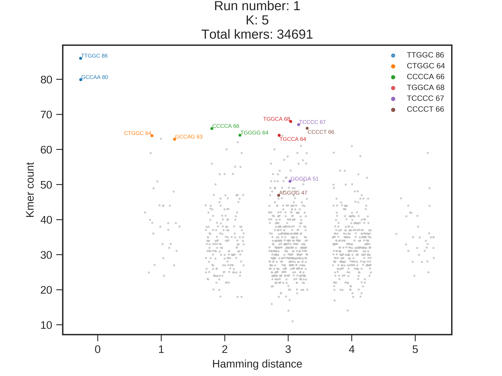
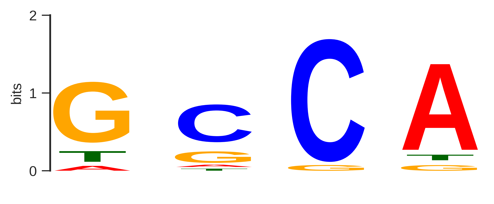
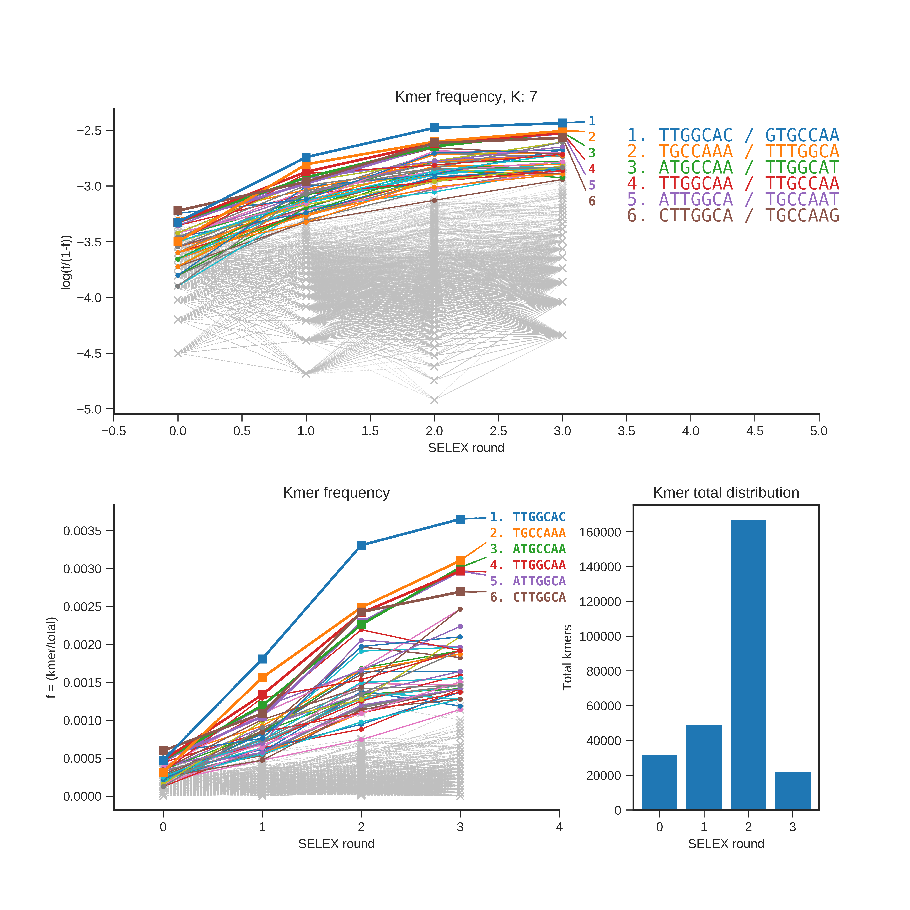

Motif on 25.0% of sequences and uses 12.24% of kmers
Dimer co-occurence index: 0.008
With mean gap length: 5 (gap standard deviation: 1.6025)

K = 4
Motif on 25.0% of sequences and uses 6.04% of kmers Dimer co-occurence index: 0.009 With mean gap length: 4 (gap standard deviation: 2.3094) | |
K = 5
Motif on 24.96% of sequences and uses 1.98% of kmers Dimer co-occurence index: 0.0 With mean gap length: 0 (gap standard deviation: 0) | |
|  | |
K = 6
Motif on 20.56% of sequences and uses 0.69% of kmers Dimer co-occurence index: 0.0 With mean gap length: 0 (gap standard deviation: 0) | |
K = 7
Motif on 10.47% of sequences and uses 0.19% of kmers Dimer co-occurence index: 0.0 With mean gap length: 0 (gap standard deviation: 0) | |
K = 4
Motif on 25.0% of sequences and uses 9.96% of kmers Dimer co-occurence index: 0.005 With mean gap length: 5 (gap standard deviation: 0.0) | |
K = 5
Motif on 24.94% of sequences and uses 4.37% of kmers Dimer co-occurence index: 0.002 With mean gap length: 0 (gap standard deviation: 0) | |
K = 6
Motif on 21.96% of sequences and uses 1.71% of kmers Dimer co-occurence index: 0.0 With mean gap length: 0 (gap standard deviation: 0) | |
K = 7
Motif on 14.75% of sequences and uses 0.68% of kmers Dimer co-occurence index: 0.0 With mean gap length: 0 (gap standard deviation: 0) | |
K = 4
|  | |
Motif on 25.0% of sequences and uses 12.24% of kmers Dimer co-occurence index: 0.008 With mean gap length: 5 (gap standard deviation: 1.6025) | |
| |
K = 5
Motif on 24.97% of sequences and uses 5.53% of kmers Dimer co-occurence index: 0.001 With mean gap length: 5 (gap standard deviation: 0.0) | |
K = 6
Motif on 23.89% of sequences and uses 1.93% of kmers Dimer co-occurence index: 0.0 With mean gap length: 0 (gap standard deviation: 0) | |
K = 7
Motif on 20.3% of sequences and uses 1.22% of kmers Dimer co-occurence index: 0.0 With mean gap length: 0 (gap standard deviation: 0) | |
K = 4
Motif on 25.0% of sequences and uses 9.09% of kmers Dimer co-occurence index: 0.007 With mean gap length: 5 (gap standard deviation: 0.0) | |
K = 5
Motif on 25.0% of sequences and uses 4.93% of kmers Dimer co-occurence index: 0.0 With mean gap length: 0 (gap standard deviation: 0) | |
K = 6
Motif on 24.74% of sequences and uses 3.27% of kmers Dimer co-occurence index: 0.0 With mean gap length: 0 (gap standard deviation: 0) | |
K = 7
Motif on 21.58% of sequences and uses 1.33% of kmers Dimer co-occurence index: 0.0 With mean gap length: 0 (gap standard deviation: 0) | |
 |  |
 |  |
1: NF1-1 | ||||
| Total sequences: | 6688 | |||
| Passed sequences: | 6684 | |||
| K4 | K5 | K6 | K7 | |
| Total kmers | 35124 | 34691 | 33323 | 31728 |
| Unique kmers | 256 (100.0%) | 1024 (100.0%) | 4091 (99.88%) | 13708 (83.67%) |
| TFBS | 1 | 1 | 1 | 1 |
| Sequences w/ TFBS | 1671 (25.0%) | 1668 (24.96%) | 1374 (20.56%) | 700 (10.47%) |
| Sequence bias | 0.0419117 | 0.0933603 | 0.201454 | 0.267492 |
2: NF1-2 | ||||
| Total sequences: | 10264 | |||
| Passed sequences: | 10260 | |||
| K4 | K5 | K6 | K7 | |
| Total kmers | 53920 | 53240 | 51135 | 48691 |
| Unique kmers | 256 (100.0%) | 1024 (100.0%) | 4094 (99.95%) | 14819 (90.45%) |
| TFBS | 1 | 1 | 1 | 1 |
| Sequences w/ TFBS | 2565 (25.0%) | 2559 (24.94%) | 2253 (21.96%) | 1513 (14.75%) |
| Sequence bias | 0.0441673 | 0.0868709 | 0.1704404 | 0.2664199 |
3: NF1-3 | ||||
| Total sequences: | 35160 | |||
| Passed sequences: | 35156 | |||
| K4 | K5 | K6 | K7 | |
| Total kmers | 186603 | 183086 | 175461 | 166902 |
| Unique kmers | 256 (100.0%) | 1024 (100.0%) | 4096 (100.0%) | 16257 (99.22%) |
| TFBS | 1 | 1 | 1 | 1 |
| Sequences w/ TFBS | 8789 (25.0%) | 8777 (24.97%) | 8399 (23.89%) | 7137 (20.3%) |
| Sequence bias | 0.0208154 | 0.0492345 | 0.1040969 | 0.2172756 |
4: NF1-4 | ||||
| Total sequences: | 4620 | |||
| Passed sequences: | 4616 | |||
| K4 | K5 | K6 | K7 | |
| Total kmers | 24490 | 24018 | 23029 | 21908 |
| Unique kmers | 256 (100.0%) | 1024 (100.0%) | 3903 (95.29%) | 9587 (58.51%) |
| TFBS | 1 | 1 | 1 | 1 |
| Sequences w/ TFBS | 1154 (25.0%) | 1154 (25.0%) | 1142 (24.74%) | 996 (21.58%) |
| Sequence bias | 0.0669391 | 0.1383603 | 0.2390132 | 0.2204313 |